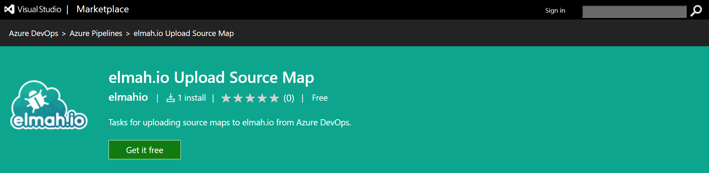
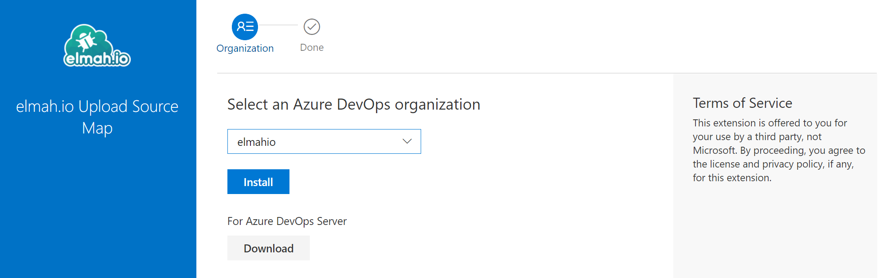
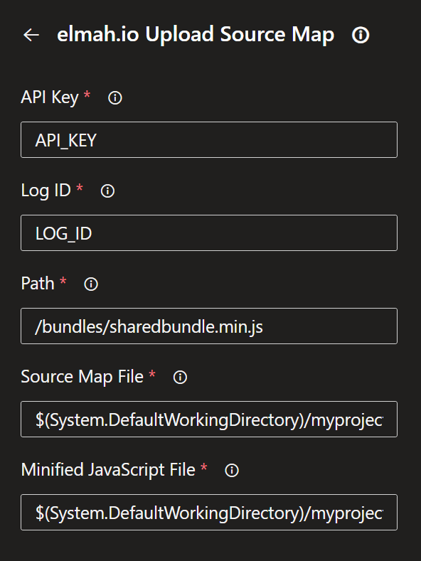
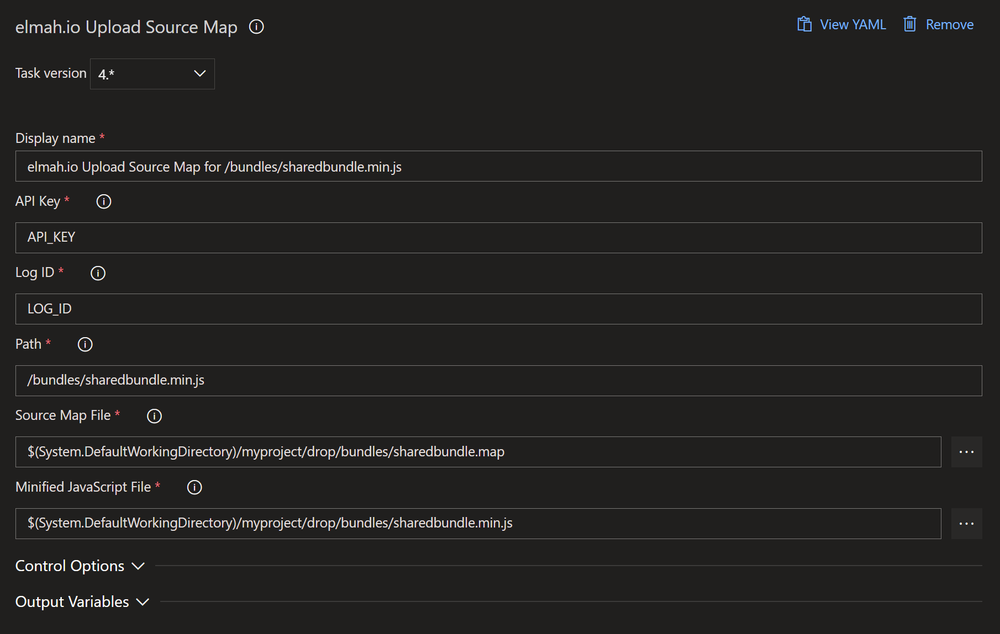
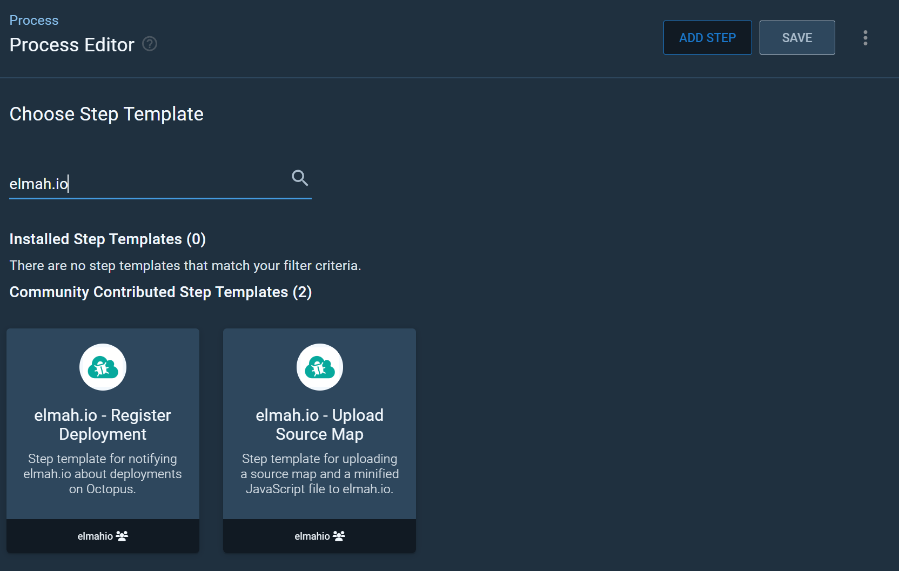
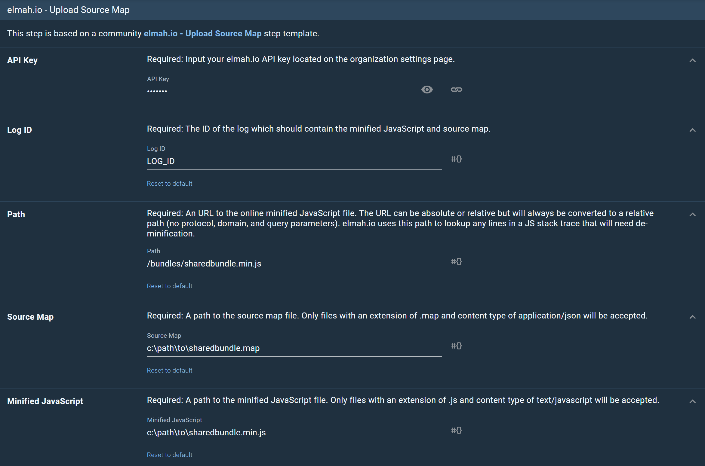

Source maps
elmah.io.javascript automatically tries to translate stack traces from minified and/or bundled code into developer-friendly traces using JavaScript source maps. For this to work, you will need to publish a valid .map source map file to either your web server or through the elmah.io API. In this article, we go through each of the possibilities.
This is not a guide for generating source map files. There's a range of possibilities to help you do that (like gulp).
Publish to your web server
The easiest way for elmah.io.javascript to translate minified/bundled stack traces is to publish a JavaScript source map alongside your minified JavaScript file. When logging a message through elmah.io.javascript, a source map is automatically used if there is a .map reference at the end of the file causing the log message/error:
var v = 42;
//# sourceMappingURL=/script.map
This will require you to serve a source map file named script.map together with the minified/bundled file. The .map file doesn't need to be publicly available over the internet, but the elmah.io.javascript package will need to have access to it.
Note
De-minification from a .map file doesn't work in older browsers (like < IE10).
Upload to elmah.io
Publishing source map files alongside your minified and bundled files is not always the preferred way of doing things. With both the minified JavaScript file and the source map, someone outside of your organization can reverse engineer your JavaScript. In cases where this would be critical or if you want to limit the size of the published files, you can choose to upload the minified/bundled file and the corresponding source map file on the elmah.io API. When elmah.io receives a stack trace from a minified JavaScript file, we try to de-minify it if a corresponding .min.js and .map file have been uploaded.
The code in the following sections will use the following bundled and minified stack trace as an example:
Error: You cannot copy to the clipboard
at window.copyTextToClipboard (https://foo.bar/bundles/sharedbundle.min.js:69:24978)
at MyViewModel.n.copy (https://foo.bar/bundles/viewmodels.min.js:37:37385)
at HTMLButtonElement.<anonymous> (https://foo.bar/bundles/sharedbundle.min.js:55:109467)
To upload a source map to elmah.io you will need an API key with the Source Maps | Write permission enabled. We recommend creating a new API key with this permission enabled only. For more information about API keys and permissions, check out How to configure API key permissions.
Upload through the API
Go to the API and insert your API key. The upload source map endpoint accepts a couple of parameters that you will need to get right to make de-minification work.
The stack trace contains references to two different bundled JavaScript files with each their .map file. Both source map files should be uploaded to the elmah.io API.
For both bundled files, fill in the details as explained here:
| Parameter | Description |
|---|---|
| logId | A source map will always belong to a specific elmah.io log. Insert the log ID of that log in this field. If an application is logging JavaScript messages to multiple logs, you will need to upload the files to all those logs. |
| Path | This is the relative path to the bundled and minified file. For the example above you will need to specify /bundles/sharedbundle.min.js for the first source map and /bundles/viewmodels.min.js for the second one. You can use an absolute path and query parameters on the URL if you prefer, but this will be converted to a relative path by the elmah.io API. |
| SourceMap | The source map file representing the minified file in the Path specified above. |
| MinifiedJavaScript | The bundled and minified JavaScript file. This will be the content of the Path specified above. |
Upload from the elmah.io CLI
Source maps can be uploaded from the elmah.io CLI. Install the CLI if not already installed:
dotnet tool install --global Elmah.Io.Cli
Then, upload a source map and minified JavaScript using the sourcemap command:
sourcemap --apiKey API_KEY --logId LOG_ID --path "/bundles/sharedbundle.min.js" --sourceMap "c:\path\to\sharedbundle.map" --minifiedJavaScript "c:\path\to\sharedbundle.min.js"
Upload from PowerShell
Uploading source maps can be built into your CI/CD pipeline using cURL, PowerShell, or similar. Here's an example written in PowerShell:
$boundary = [System.Guid]::NewGuid().ToString()
$mapPath = "c:\path\to\sharedbundle.map"
$jsPath = "c:\path\to\sharedbundle.min.js"
$mapFile = [System.IO.File]::ReadAllBytes($mapPath)
$mapContent = [System.Text.Encoding]::UTF8.GetString($mapFile)
$jsFile = [System.IO.File]::ReadAllBytes($jsPath)
$jsContent = [System.Text.Encoding]::UTF8.GetString($jsFile)
$LF = "`r`n"
$bodyLines = (
"--$boundary",
"Content-Disposition: form-data; name=`"Path`"$LF",
"/bundles/sharedbundle.min.js",
"--$boundary",
"Content-Disposition: form-data; name=`"SourceMap`"; filename=`"sharedbundle.map`"",
"Content-Type: application/json$LF",
$mapContent,
"--$boundary",
"Content-Disposition: form-data; name=`"MinifiedJavaScript`"; filename=`"sharedbundle.min.js`"",
"Content-Type: text/javascript$LF",
$jsContent,
"--$boundary--$LF"
) -join $LF
Invoke-RestMethod 'https://api.elmah.io/v3/sourcemaps/LOG_ID?api_key=API_KEY' -Method POST -ContentType "multipart/form-data; boundary=`"$boundary`"" -Body $bodyLines
Upload from C#
Source maps can be uploaded from C# using the Elmah.Io.Client NuGet package:
var api = ElmahioAPI.Create("API_KEY");
using var sourceMapStream = File.OpenRead("c:\\path\\to\\sharedbundle.map");
using var scriptStream = File.OpenRead("c:\\path\\to\\sharedbundle.min.js");
api.SourceMaps.CreateOrUpdate(
"LOG_ID",
new Uri("/bundles/sharedbundle.min.js", UriKind.Relative),
new FileParameter(sourceMapStream, "sharedbundle.map", "application/json"),
new FileParameter(scriptStream, "sharedbundle.min.js", "text/javascript"));
Upload from Azure DevOps
Uploading one or more source maps from Azure DevOps is available using our integration with Pipelines and Releases. Here is a guide to help you upload source maps from Azure DevOps.
Go to the elmah.io Upload Source Map extension on the Azure DevOps Marketplace and click the Get it free button:

Select your organization and click the Install button:

Pipelines
Go to your Azure DevOps Pipeline configuration and add the elmah.io Upload Source Map task. Fill in the fields as shown here:

When clicking the Add button, YAML code will be added to your configuration looking similar to this:
- task: ElmahIoUploadSourceMap@4
inputs:
apiKey: 'API_KEY'
logId: 'LOG_ID'
path: '/bundles/sharedbundle.min.js'
sourceMap: '$(System.DefaultWorkingDirectory)/myproject/bundles/sharedbundle.map'
minifiedJavaScript: '$(System.DefaultWorkingDirectory)/myproject/bundles/sharedbundle.min.js'
Releases
Before you can include the upload source map task, you will need to publish your generated source maps and minified JavaScript files from your build pipeline.
Go to your Azure DevOps project and add the elmah.io Upload Source Map task. Fill in all fields as shown here:

Upload from GitHub Actions
Uploading one or more source maps from GitHub Actions is available using our integration with Actions. We recommend adding your API key and log ID as secrets on your GitHub repository, to avoid people outside of your organization getting access to those values.
To upload a generated source map from GitHub Actions, include the following in your build YAML file:
uses: elmahio/github-upload-source-map-action@v1
with:
apiKey: ${{ secrets.ELMAH_IO_API_KEY }}
logId: ${{ secrets.ELMAH_IO_LOG_ID }}
path: '/bundles/sharedbundle.min.js'
sourceMap: 'path/to/sharedbundle.map'
minifiedJavaScript: 'path/to/sharedbundle.min.js'
Upload from Octopus Deploy
Uploading one or more source from Octopus Deploy is available using our step template for Octopus. The step template can be installed in multiple ways as explained on Community step templates. In this document, the step template will be installed directly from the Process Editor:
-
Go to the Process Editor and click the ADD STEP button. In the Choose Step Template section search for 'elmah.io': 
-
Hover over the 'elmah.io - Upload Source Map' community template and click the INSTALL AND ADD button.
-
In the Install and add modal click the SAVE button.
-
The step template is now added to the process. Fill in all fields as shown here: 
This article was brought to you by the elmah.io team. elmah.io is the best error management system for .NET web applications. We monitor your website, alert you when errors start happening, and help you fix errors fast.
See how we can help you monitor your website for crashes Monitor your website